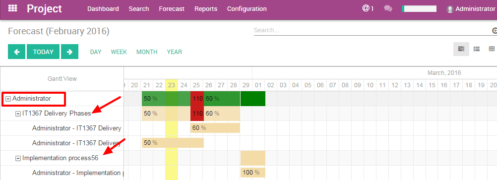
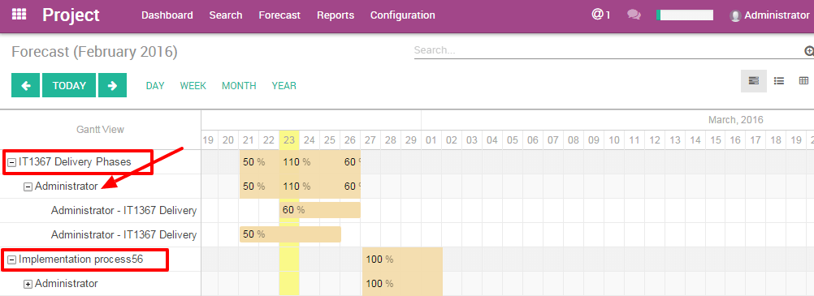

Introduction to forecast
Scheduling and forecasting tasks is another way to manage projects. In Odoo, the Forecast option gives you access to the Gantt chart.
So far, you've been working with the Kanban view, which shows you the progress of a project and its related tasks.
Now, with the Forecast option, the Gantt view gives you the big picture. It's highly visual which is a real plus for complex projects, and it helps team members to collaborate better.
This option is a real benefit in terms of planning and organizing the workload and human resources.
How to configure the projects?
Configure the project application
The Forecast option helps you to organize your projects. This is perfect when you need to set up a project with a specific deadline. Therefore, each task is assigned a specific timeframe (amount of hours) in which your employee should complete it!
First you need to activate the Forecast option for the whole project application:
Go to . Select the Forecast option and click Apply.

Once this is done, you still need to activate the Forecast option specifically for your Project (maybe you don't need the Gantt chart for all the projects that you manage).
Configure a specific project.
When creating a new project, make sure to select the option "Allow Forecast" in your project settings.
You'll see the Forecast option appearing in the top menu.
If you add the Forecasting option to an existing project, whether there are task deadlines or not scheduled, the task won't be displayed.
The tasks of a project are not related to a forecast.
How to create a forecast?
Before creating a project with forecast, list all the tasks with the projected time they should take. It will help you to coordinate the work.
In order to display the projects in the Gantt chart, you need to create the forecast from the task page. To create a forecast, click on the top left corner of the task, Create a Forecast.

Tip
You can also create a new Forecast easily by directly clicking on an empty space in the Gantt chart calendar.
The Forecast interface will fill in the name of the Project and the task automatically. You just need to add the dates and the time the task should take.
Tip
The "Effective hours" field appears only if you have the Timesheet app installed on your database. This option helps you to see the progress of a task thanks to the integration with Timesheet.
For example: When a user fills in a Timesheet with your Project name (Analytic account), with 10 hours spent, the forecast will display 10 hours in the Effective hours field.
What are the difference between the views?
In the Project app menu you have a Forecast menu. This sub-menu helps you to see the Gantt chart from different points of view: by users or by projects.
By users : people management
This option displays the Gantt chart with the people assigned. Odoo's Gantt chart shows you who's involved; it gives you the big picture of the project. It's very useful to allocate your resources effectively.
On the left side, first level, you can see which users are involved. Then, on the second level you see which projects they are assigned to. On the third, you see which tasks they're on.
Each task is represented by a coloured rectangle. This rectangle reflects the duration of the task in the calendar.
The top rectangle on the first level is the sum of all the tasks compiled from the third level. If it's green, it means that the total time allocated to that user is less than 100%. When it's red, it means that this user is assigned to multiple tasks which total more than 100% of his/her time.

Plan the workload
When creating a forecast, you have to select the time the user should spend on it. 100% means that your user should work on it full time during those days. He/She has no other tasks to work on. So you can decide from 1 to 100% how your users should organize their time between different tasks.
The power of integration helps you to avoid double booking an employee. For example, if your expert is already at 40% on another task in another project, you can book him/her for only 60% for that period.
In the example below, the user "Administrator" is working on 2 projects ("IT1367 Delivery Phases" and "Implementation Process56"). The user is assigned to both projects with a total of 110% of their time. This is too much so the Project Manager should change the users assigned to the task. Otherwise, the PM can change the dedicated time or the dates, to make sure that this is feasible.
Gantt view advantages
This Gantt view ‘by user' helps you to better plan your human resources. You avoid confusion about the the tasks and the assignations of the users. The Gantt Chart is highly visual and helps to comprehend all the different elements at once. Also, you immediately know what has to be done next. This method helps you to better understand the relations between the tasks.
The dynamic view of the Gantt in Odoo allows you to:
- change the time and date of a forecast by clicking and sliding the tasks in the future or in the past
- create a new forecast into the Gantt chart immediately
- modify an existing forecast
- change the length of a task by extending or shortening the rectangle.
By projects: project management
The Gantt Chart is the perfect view of a project to better understand the interactions between the tasks. You can avoid overlapping tasks or starting one too early if another one isn't finished. Odoo Gantt chart is clear and helps you to coordinate tasks efficiently.
This option displays the Gantt chart by showing the projects on the first level of hierarchy.
On the left side, first level, you can see the projects. Then, on the second level you see which users are assigned. On the third, you see which tasks they're on.
This view won't show your HR time. The colours don't apply. (see By Users section)
Gantt view advantages
The dynamic view of the Gantt in Odoo allows you to:
- change the time and date of a forecast by clicking and sliding the tasks in the future or in the past
- create a new forecast into the Gantt chart immediately
- modify an existing forecast
- change the length of a task by extending or shortening the rectangle.